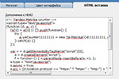

Tabs - элемент интерфейса для отображения группы документов таким образом, что только 1 активный документ показан, а остальные спрятаны. Пришёл этот элемент интерфейса в компьютеры из офисного быта: папки с документами разделялись такими закладками на группы. Ну и конечно телефонные книги часто разделены табами по алфавиту.
 Табы показаны в одном месте, рядом. Отсюда — удобство навигации. И целостность навигации, что тоже важно. Все уже привыкли к табам, так как видят и используют их везде (те же телефонные книжки, каталоги в библиотеках, и т.д.). А значит и домохозяйка знает, как они работают.